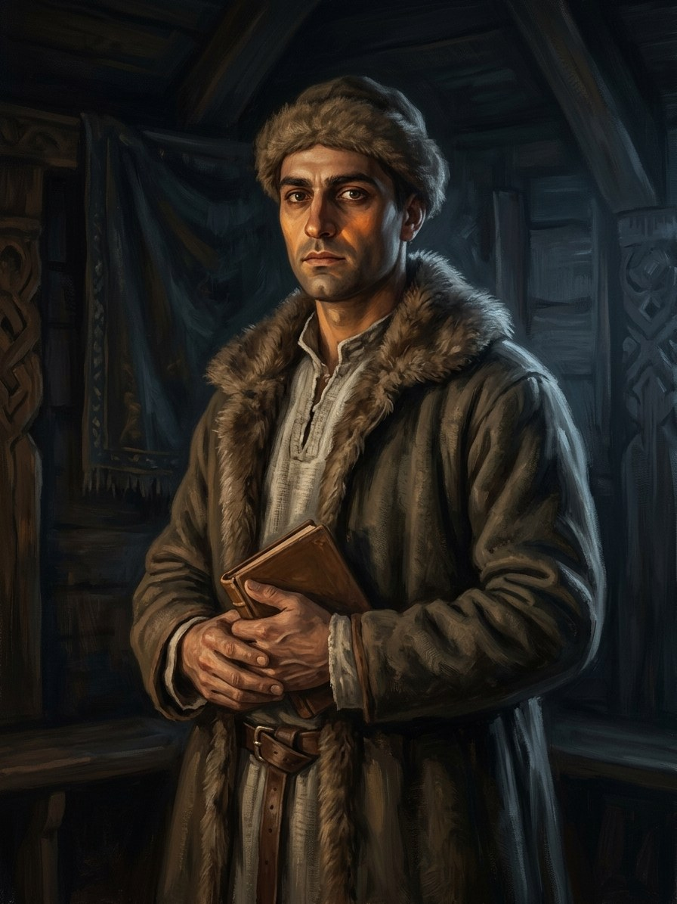

Samuelis (Elijas’s elder son)¶
Summary¶
Samuelis is the elder son of Elijas, the Karaim captain of the Trakai guards, and the older, wiser brother of Zacharijas. He leads the family’s prayers and answers his brother’s complaint about the dying hearths with a question: where did your father sit?
Samuelis (Elijas’s elder son, Karaim)

Samuelis (Elijas’s elder son, Karaim) · character¶
Tipas |
veikėjas |
Metai |
?–? |
Status |
Sagos išmonė |
Pastaba |
Leads the family’s prayers; Zacharijas’s older, wiser brother (Book V ch. 4). |
Record vs saga¶
[The saga’s invention]: All of it. The Karaims at Trakai are historical; this family is not.
Appearances¶
Book V: ch. 4 (Užgesusios Krosnys).
Ryšiai
Sąsajos¶
graph LR
elijas["Elijas, son of Mošė (Karaim guard captain)"]
samuelis["Samuelis (Elijas's elder son, Karaim)"]
zacharijas["Zacharijas (Elijas's younger son, Karaim)"]
samuelis -->|Sibling| zacharijas
elijas -->|Parent of| samuelis
style samuelis stroke-width:3px